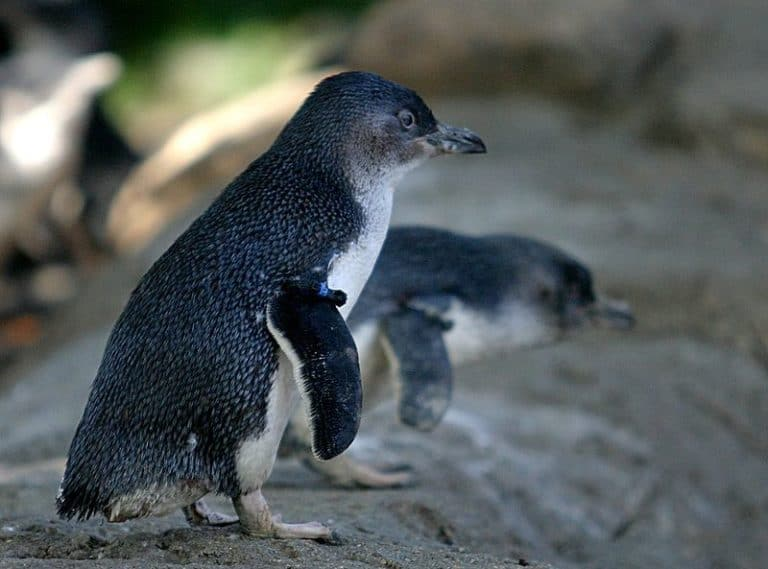

The smallest species of penguin!
The Little Penguin is the only species of penguin that breeds in Australia. Although the most famously occurring on Phillip Island in Victoria, dozens of colonies are scattered on islands from the NSW North Coast, south to Tasmania, and west to Carnac Island, off Fremantle. On land penguins are eaten by introduced predators and their burrows are trampled, and at sea they are susceptible to oil pollution, fish die-offs and entanglement in fishing nets. Despite this, the total population in Australia is stable at perhaps a million birds.
Did you know?
The Little Penguin...
- is the only species of penguin that breeds in Australia.
- also known as the Fairy Penguin, is the smallest of all penguins and certainly stands up to its name.
- does its 'flying' underwater and can swim up to 50 kilometres a day and dive to depths of up to 30 metres.
UC Little Penguin Conservation Group
11 Kirinari Street,
Bruce ACT 2617
02-6201-5111
11 Kirinari Street,
Bruce ACT 2617
02-6201-5111
Related Websites
- A to Z Animals a-z-animals.com
- Australia Birdlife birdlife.org.au
- Victoria State Government Wildlife Fact Sheet Little-Penguin.pdf